Everything here was taken on the iOS Simulator (iPhone 17, 402 x 874 points) and headless Chromium, against an isolated local Convex backend with the seeded sweep accounts only. iOS media is from commit 57160b80 unless a caption says otherwise.
What it does
Two mahjong tables in the online World's Café. Sit at an empty one and you host its lobby: four seats, Add bot and Remove, the rules, Start game.
A full hand of Hong Kong rules, full screen: dice, deal, draw and discard, pong, kong and chow claims with a 5 second bar, self-drawn and discard wins with a faan breakdown.
Points are SOW coins, worked out on the server. Bots play for the bank, which pays a person at most 200 coins a day.
Anyone in the Café can watch a hand without seeing concealed tiles. Getting up mid-hand hands your seat to a bot until you sit back down.
Sitting down, the lobby and bots
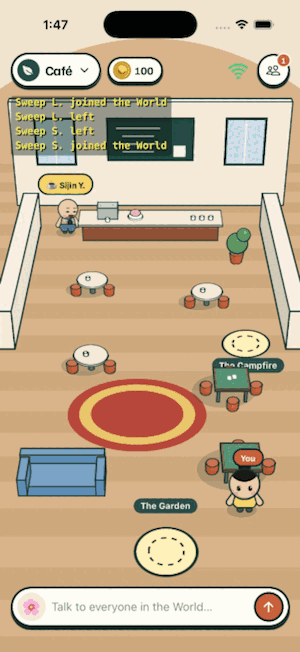
Tap Table 1's East stool, the lobby opens, Add bot three times, Start game lights up. mp4
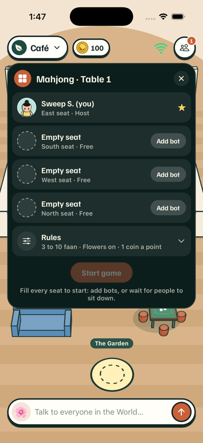
The lobby as host, three empty seats
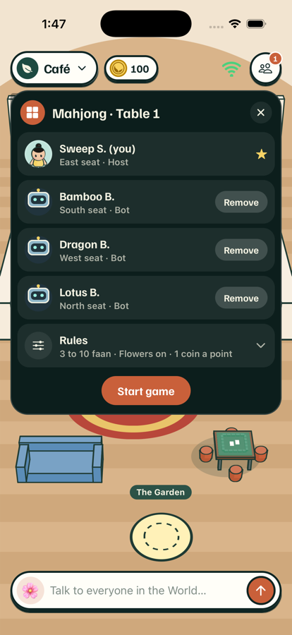
Three bots seated, Start game enabled
Dice and deal
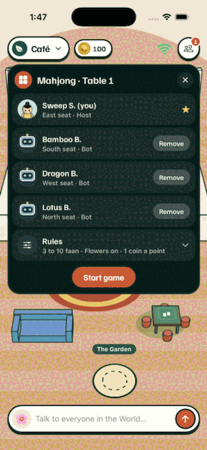
The dice pick the dealer and the break, the hand fills in fours and sorts itself. mp4
A turn and a claim
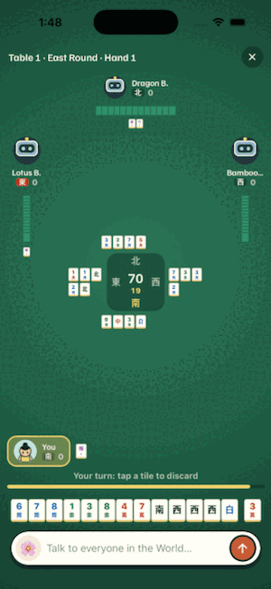
Tap a tile twice to discard; a bot's discard opens Chow and Pass for 5 seconds; the chow is laid down and it's your turn to discard. mp4
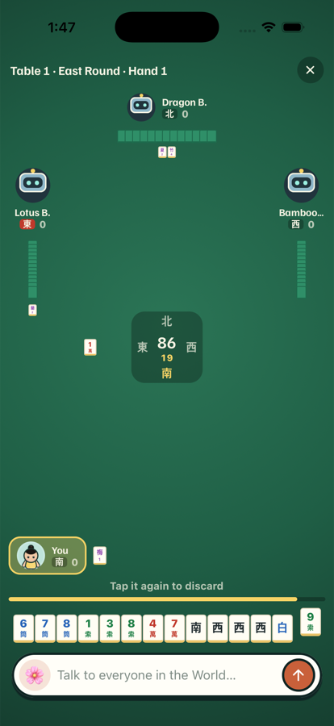
Your turn, a tile picked ("Tap it again to discard")
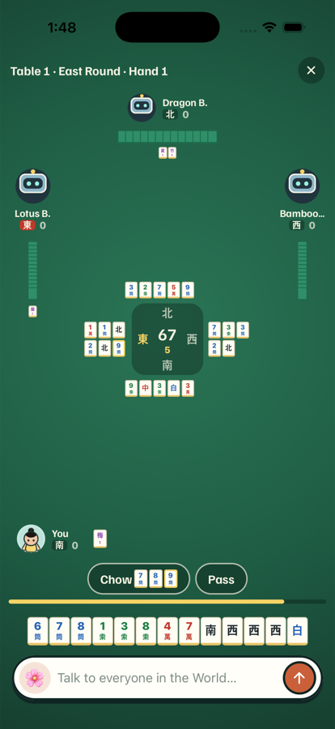
The claim bar: Chow with the two tiles it uses, and Pass
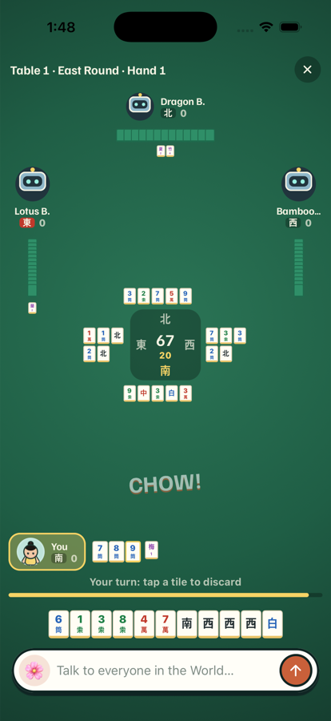
The chow beside your plate
The end of a hand: faan and coins
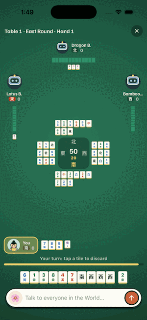
Dragon Bot wins self-drawn: HU!, the winning hand, each faan line, 5 faan for 24 points, and the coins (each other seat pays 12). mp4
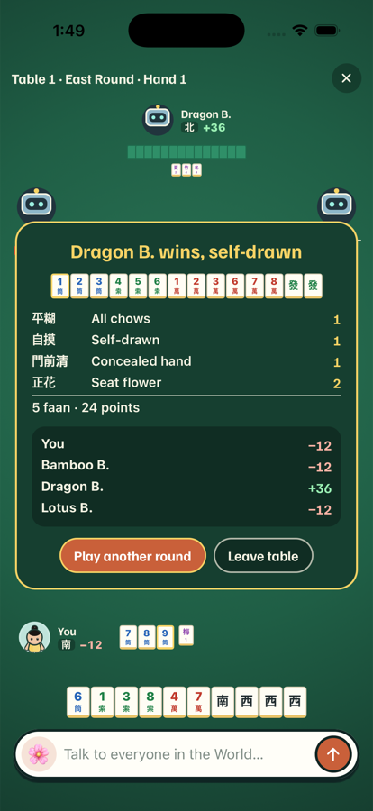
The breakdown, with Play another round and Leave table
Getting up mid-hand
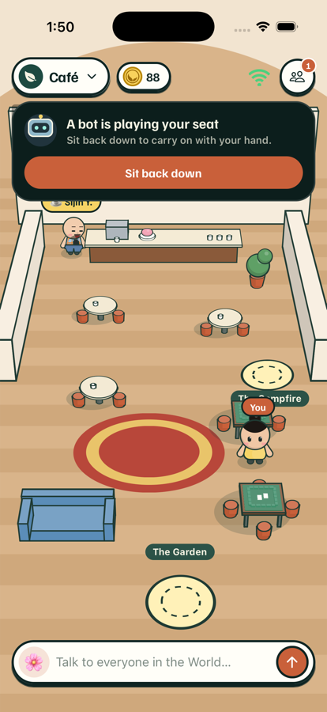
Hand 2: after the X, a bot plays the seat and a card offers Sit back down. Coins show 88 after paying 12.
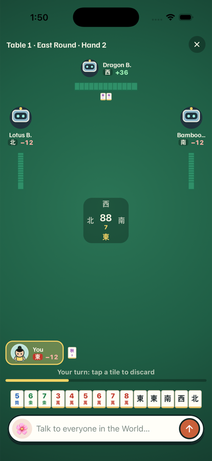
Sat back down: the same hand, now as East (the dealer moved on)
Watching, taking over a bot, and the World tag
Web, the leader watching Table 1 (57160b80): every hand face down, no tile can be tapped
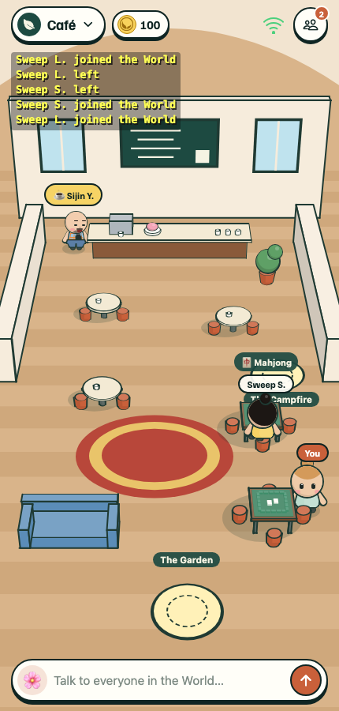
Web (57160b80): the 🀄 Mahjong tag over Sweep S. at Table 1
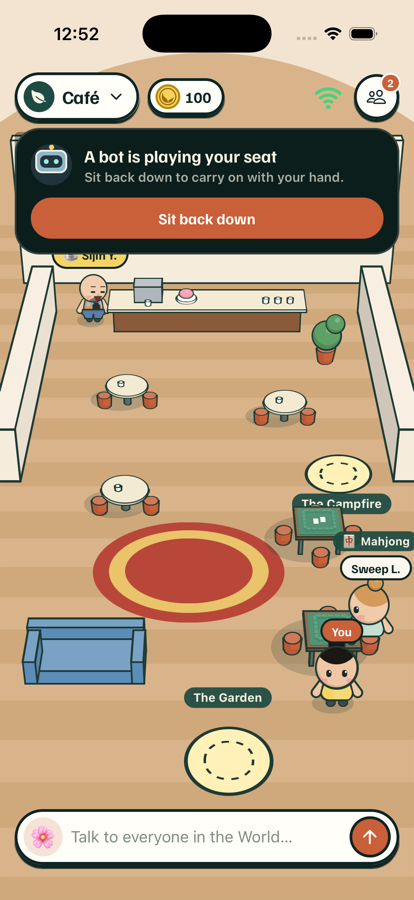
iOS (058c5125): the tag over Sweep L. at Table 2, seen while Sweep S. is up from the table
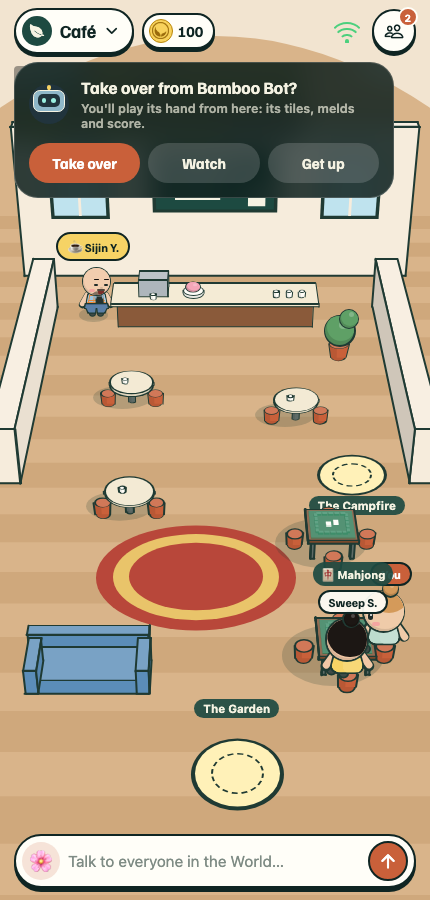
Web (058c5125): sitting in a bot's stool asks to take over, and asks again after Get up
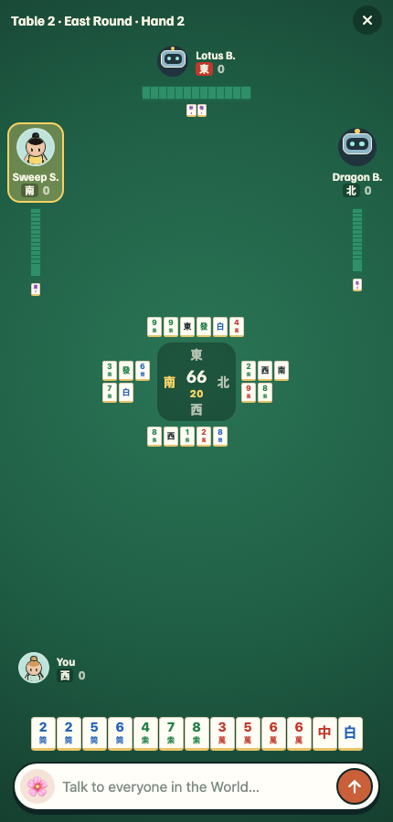
Web (058c5125): after Take over, the bot's hand is yours
Verification
Verified on iOS: sitting and the lobby, Add bot, start, dice and deal, discarding, a pong and a chow prompt (pong and chow taken), one drawn hand (058c5125) and one self-drawn win with the coin breakdown (57160b80), getting up and sitting back, Play another round.
Verified on web: watching without concealed tiles, the 🀄 tag, taking over a bot (the card returns after Get up).
The repo's mahjong.ios.yaml check passes on 058c5125.
Not verified: a person's own Hu (the hands played ended in a draw and a bot's win), a kong, VoiceOver for the lobby change, and the Reduce Motion callout fix.